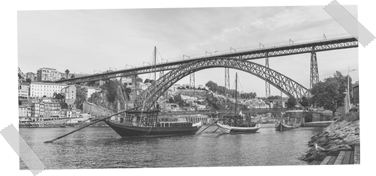

A história
A bela cidade do Porto fica situada no norte de Portugal. A cidade conta com cerca de 214.000 habitantes fazendo dela a segunda maior cidade do país. É a cidade que deu o nome a Portugal, quando se designava de Portus Cale, vindo mais tarde a tornar-se a capital do Condado Portucalense. Tem origem num povoado celta, pré-romano.
